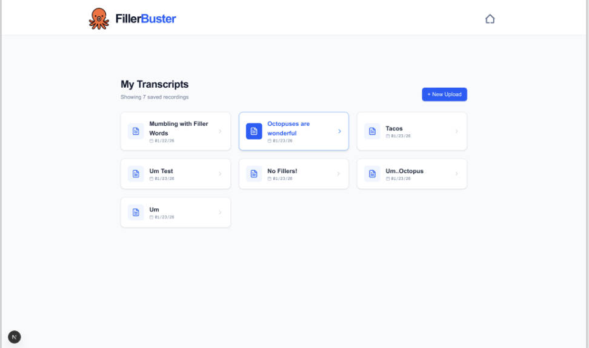
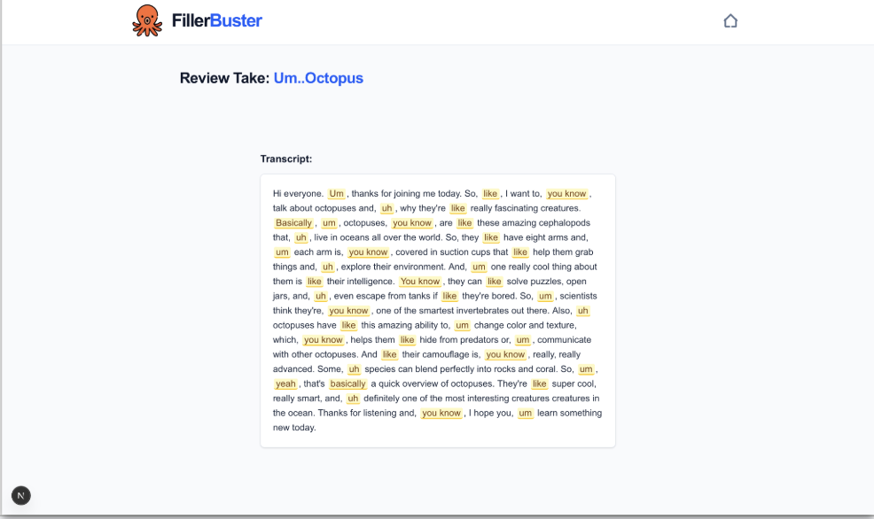

Overview
FillerBuster is a speech-practice tool built with Next.js and the Gemini API that helps users improve their presentations by detecting filler words in recorded speech. Users upload a recording and receive a verbatim transcript with filler words highlighted inline — each marked word accompanied by an explanation of why it was flagged.
The tool is designed around iterative rehearsal rather than single-pass correction. By preserving transcripts across multiple takes, it helps speakers recognize patterns in their hesitation language over time and track improvement session to session.
Features
Verbatim transcription
Accurate transcripts preserve hesitation language exactly as spoken, so filler words remain visible in the record rather than being cleaned away by normalization.
Context-aware filler detection
Words are only flagged when functioning as fillers, not when they carry meaning in context. "Like" in a comparison and "like" as a hesitation marker are treated differently.
Explainable feedback
Highlights communicate why words were marked, helping users interpret model decisions rather than accepting them as opaque judgments. This keeps the feedback process transparent and verifiable.
Multi-take reflection workflow
Saved recordings allow speakers to review progress across multiple rehearsal attempts, supporting pattern recognition over time rather than single-session correction.
Technologies
Screenshots


Reflections
Because filler detection depends heavily on context, the central design challenge was keeping users in control of the feedback process. Surfacing the reasoning behind each flagged word — rather than presenting model output as authoritative — made the tool feel more like a collaborative reviewer than an automated judge.
Designing around iterative rehearsal rather than single-pass correction shaped the entire information architecture. Instead of treating each session as isolated, the saved-takes model invites speakers to compare across attempts — recognizing whether fillers cluster at transitions, under time pressure, or in particular topic areas.
Future directions include user verification of flagged filler words to improve model accuracy, progress tracking across sessions, and scoring based on accepted corrections over time.